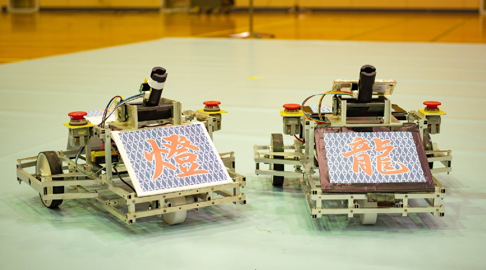
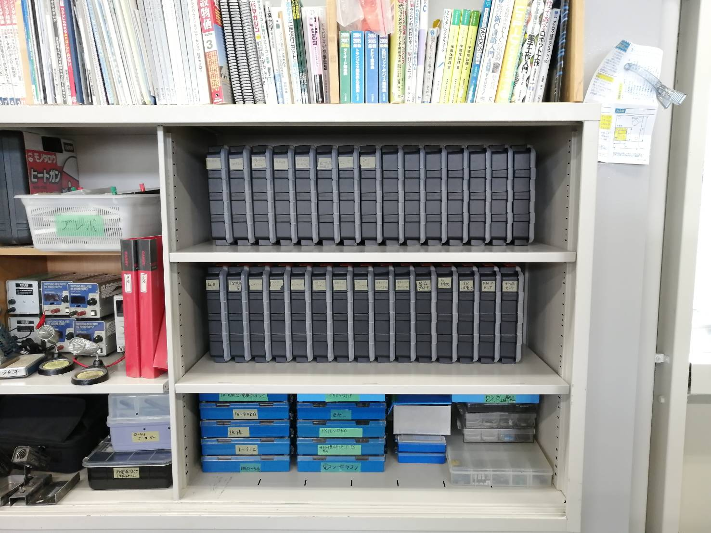
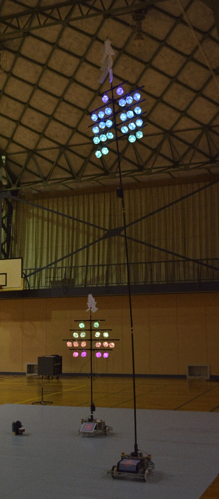

ホーム
新入生の方へ

去年制作した竿燈ロボット(詳細)
私たちと一緒にロボットを作りませんか？
4月下旬に発表されるルールに基づき、ロボットを作って、10月ごろ(今年は2021年10月10日に東北地区大会)のNHK高専ロボコンに出場しています。
簡単に説明すると、様々な技術が身につく楽しい部活です。
最新の情報は公式Twitterから確認してくださいね。

電子部品の部品棚
入部するメリットは？
こんなにメリットが…
- 高専で学ぶ専門教科の内容を実践できる！(電子回路制作、プログラミング、機械加工、3DCAD、等)
- 部室の部品や機器を使用できる
- ロボコン楽しい
- 豊富な予算で物作りをできる
変な先輩がいっぱいいる
部室はどこにあるの？
部室の場所はこちら
部費はいくらぐらい？
部費は、去年は1年間で7000円です。
今年も同じくらいだと思います。
たくさん入部してくれると、1人あたりの部費が安くなります。
7000円払えば、部室の旋盤やボール盤、3Dプリンタ、PC、電子部品（写真の部品棚にある）を使えます！
部員から徴収する部費の他に、ロボットの製作には学校の予算も使わせていただいております。
活動時間は？
放課後、17時までです。
大会直前には、月に数回、延長の申請をして、18時30分までです。
夏休みは平日9時から17時まで
春休みは週に3回ぐらい、9時から17時です。
だからと言って、毎回参加する必要はありません。
休日の活動は、バイトや兼部などでほぼ参加しない部員も多いです。
というわけで、せっかく高専に入学したのにロボコンをやらないのはもったいない！
ぜひ、ロボコン部への入部を検討してみてください。
祝！全国大会出場！

Aチーム「Run・Turn」
祝！全国大会出場！
2020年度の高専ロボコン「はぴ☆ロボ自慢」で、Aチーム「Run-Turn」（ランターン）が全国大会に出場することができました。
秋田竿燈まつりを再現！
今年は、新型コロナウイルスにより、自由なロボットを作るという例年とは異なる高専ロボコンでした。
そこで、秋田竿燈まつりをロボットで再現をすべく、大型の倒立振子ロボットを製作しました。
26年ぶりに全国で受賞
結果、竿燈を立たせる制御技術などを評価くださり、東北地区大会では技術賞、全国大会ではローム株式会社様より特別賞を頂きました！
全国大会で賞をいただくのは、1994年の「スペースフライヤー」に出場した「なげわっぱ」以降26年ぶりとなります。
2020年度の出場マシンの詳細情報はこちら
ロボコン部とは？
私たちは、NHKが主催する「アイデア対決・全国高等専門学校ロボットコンテスト」に毎年出場している部活です。
一応、学校でのこの部活の正式名称は「ロボットコンテスト」となっているようです。
更新履歴
令和3年度
■[04/06]デザインを少し変更
■[04/06]部室の場所の情報を追加
■[04/06]新入生向けの情報をホームに追加
令和2年度
■[01/15]2019年度、2020年度の機体紹介を追加
■[01/15]その他、細かい修正・加筆
■[05/26]Webページデザインを大幅変更
■[05/26]HTML5化、レスポンシブデザイン化してスマホ対応
令和元年度
■[07/22]トップページ・部員・機体紹介の更新
平成30年度
■[05/15]トップページ・部員・機体紹介の更新
平成29年度
■[07/04]トップページ・部員・機体紹介の更新
平成28年度
■[08/25]トップページ・部員・機体紹介の更新
平成27年度
■[05/25]トップページ・部員の更新、機体紹介完成
平成26年度
■[02/03]背景の変更
■[01/07]秋田高専ロボコンHP公開(機体紹介未完成)
2020年5月26日まで使っていた旧ホームページはこちらです。